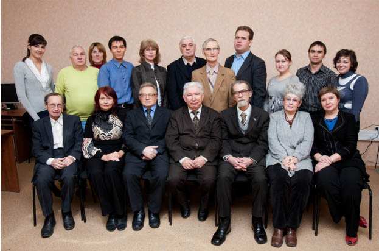

Сотрудники кафедры

Штатные преподаватели:
- Зав.кафедры: Вершинин И.С.
- Песошин В.А.
- Захаров В.М.
- Кузнецов В.М.
- Райхлин В.А.
- Бикмухаметов Р.Р.
- Борисов А.Н.
- Белашова Е.С.
- Гибадуллин Р.Ф.
- Песошина Н.Т.
- Шалагин С.В.
- Эминов Б.Ф.
- Хафизова А.Ш.
- Ктомас Б.Г.
- Пикулева Н.И.
- Минязев Р.Ш.
- Тахаутдинова С.Л.
Совместители:
- Осипов С.Н.
- Ильина О.В.
- Литвин В.М.